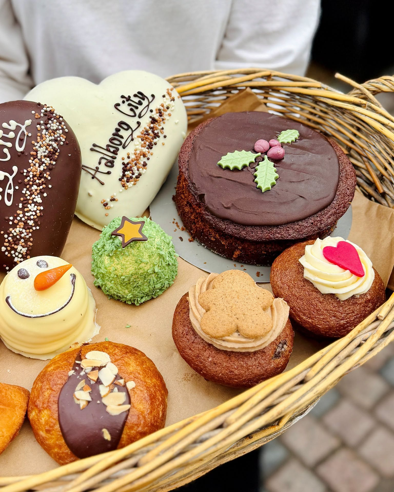

Forside / Mad og drikke
Fra æbleskiver og gløgg til brændte mandler - find dit næste julestop på pladsen.

Brændte Mandler
Hytten med brændte mandler finder du på øverste repos. Som navnet fortæller sælger de brændte mandler. Du finder flere varianter som f.eks. jordbær, kakao, lakrids og chili. Derudover sælger de også kandiserede æbler, slikkepinde og sliksutter.
Alexanders Hytte
Friskbrændte mandler fra Spanien, både klassiske varianter og lakridsmandler. Derudover nybagte æbleskiver med syltetøj og flormelis samt hjemmelavet gløgg
Den Lille Pandekagevogn
Den Lille Pandekagevogn laver hjemmelavede pandekager og hjemmelavede æbleskiver i deres hytte på det midterste repos.
Churros Vognen
Igen i år kan du nyde de lækreste sprøde churros på julemarkedet. Du finder dem på første repos, samt i deres vogn på Nytorv. De sprøde churros fås med forskellig topping - nutella, kanelsukker, flormelis, jordbær, chokolade, karamel og softice. Derudover sælger de kandiserede/chokolade æbler, marshmellows med chokolade, brændte mandler, kaffe og kakao.
Bagerhytten
I år har vi i samarbejde med Aalborg Handelsskole fået en bagerhytte på julemarkedet. Alt bagværk du finder i hytten, er lokalt produceret hos Fru Søgaard. Du finder et stort udvalg af sprøde julesmåkager, samt andet lækkert julebag. Der vil være honninghjerter, honningbomber, romkugler, mini romkugler, flødeboller, p-tærter, cookies, chokoladepebernødder m.m. I småkagebøtter finder du brunkager, vaniljekranse, orange-mandel, biscotti, klejner og chokolade cookies.
Fudge Hytten
I år har vi en lækker sød nyhed til jer. Hele vejen fra Italien, er Daniele og hans kollegaer kommet til Aalborg Julemarked med deres Fudge hytte. Her finder du et hav af forskellige fudge i forskellige smagsvarianter, farver og former.
Økologiske Kastanjenødder
På det midterste repos finder du en ny hytte. I denne hytte kan du købe ristede kastanjenødder. Nødderne er økologiske. Derudover sælger de også kvalitets barista kaffe. Fx latte, cappuccino, americano osv., samt kaffe i hele bønner.
Grill Hytten
Grill Hytten finder du igen i år på Gammeltorv. Denne gang i en større hytte med mulighed for at stå i læ rundt om hytten. Her serverer de årets julefrankfurter, KÆMPE hotdogs og 1/2 meter lange hotdogs med råsyltede rødløg - en rigtig jule klassiker. Alle deres pølser grilles direkte over åben ild på den store ottekantede grill. Derudover sælger de også kolde og varme drikke og andre lækkerier. Grill Hytten finder du på midterste repos.
Caféen med Flæskestegsburgere
I år har vores folk i caféen valgt, at du i caféen kan købe saftige flæskestegsburgere med frisklavet flæskesteg, rødkål, syltende agurker og dressing. Hertil kan du nyde en kold juleøl, sodavand og glühwein. I år finder du caféen på midterste repos.
Hollandsk Ost
Hollandsk Ost finder du på nederste repos. Det er tiende gang de er med på julemarkedet. De sælger et stort udvalg af hollandsk kvalitetsost, hollandske pølser og hollandske stroopwafels (honningvafler).
Kaffehytten
I år har vi en dejlig kaffe nyhed til jer. Kaffeexpressen har i år en hytte, hvor de sælger lækre varme drikke. Der er Cappuccino, Café Latte, Americano, espresso, varm kakao, Chai latte, Green Macha m.m. Desuden kan du købe håndlavede økologiske flødeboller, og sjove waffle sticks (vafler på pind med forskelligt topping). Derudover Kaffebønner, gavekurve, chokolade og andre lækkerier
Glühwein og Fadøls Hytten
I den store pavillon hytte på det øverste repos finder du både Glühwein, kolde fadøl og andre drikkevarer. Den store ottekantede hytte har en overdækket terrasse hele vejen rundt, så du kan stå i læ og tørvejr og nyde en varm Glühwein eller kold fadøl.
ROMeriet
ROMeriets hytte finder du på midterste repos. Her sælger de: Lumumba: varm kakao med rom, friskpisket flødeskum med vaniljesukker på toppen og chokoladedrys. Børne-Lumumba: varm kakao, friskpisket flødeskum med vaniljesukker på toppen og chokoladedrys. Romtoddy: Julete med kanelstænger, citron, rørsukker og nelliker, som er kogt op og tilsat rom inden serveringen og selvfølgeligt hjemmelavet helt fra bunden. De sælger også deres rom og julerom. ROMeriet har butik i Gravensgade, 9000 Aalborg.